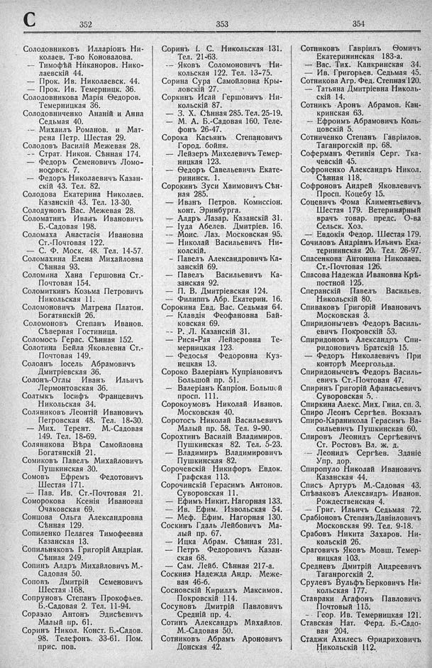

Лист источника 468
Скан

Распознанный текст
C
352
Солодовниковъ Илларіонъ Ни-
колаев. Т-во Коновалова.
— Тимофѣй Никаноров. Нико-
лаевскій 44.
— Прок. Ив. Николаевск. 44.
— Прок. Ив. Темерницк. 36.
Солодовникова Марія Ѳедоров.
Темерницкая 36.
Солодовниченко Ананій и Анна
Седьмая 40.
-- Михаилъ Романов. и Мат-
рена Петр. Шестая 29.
Солодовъ Василій Межевая 28.
-- Страт. Никон. Сѣнная 174.
— Федоръ Семеновичъ Ломо-
носовск. 7.
— Федоръ Николаевичъ Казан-
скій 43. Тел. 82.
Солодова Екатерина Николаев.
Казанскій 43. Тел. 13-30.
Солодуновъ Вас. Межевая 28.
Соломатинъ Иванъ Ивановичъ
Б.-Садовая 198.
Соломаха Анастасія Ивановна
Ст.-Почтовая 122.
— С. Ф. Моск. 48. Тел. 14-57.
Соломахина Елена Михайловна
Сѣнная 93.
Соломина Хана Гершовна Ст.-
Почтовая 154.
Соломиткинъ Козьма Петровичъ
Никольская 11.
Соломоновичъ Матрена Платон.
Богатянскій 26.
Соломоновъ Степанъ Иванов.
Сѣверная Гостиница.
Соломосъ Герас. Сѣнная 152.
Солотина Бейла Яковлевна Ст.-
Почтовая 149.
Солоанъ Іосель Абрамовичъ
Дмитріевская 36.
Солонъ-Оглы Иванъ Ильичъ
Лермонтовская 36.
Солтыкъ Іосифъ Францевичъ
Никольская 34.
Соляниковъ Леонтій Ивановичъ
Петровская 48. Тел. 18-30.
— Мих. Терент. М.-Садовая
149. Тел. 18-69.
Соляникова Вѣра Самойловна
Богатянскій 21.
Сомиковъ Павелъ Михайловичъ
Пушкинская 30.
Сомовъ Ефремъ Федотовичъ
Шестая 171.
— Пав. Ив. Ст.-Почтовая 21.
Соморокова Ксенія Ивановна
Очаковская 69.
Сонцова Ольга Александровна
Сѣнная 129.
Сопиленко Пелагея Тимофеевна
Казанская 13.
Сопильняковъ Григорій Андріан.
Сѣнная 249.
Сопинъ Алдръ Михайловичъ М.-
Садовая 50.
Соповъ Дмитрій Семеновичъ
Шестая 168.
Сопруновъ Степанъ Прокофьев.
Б.-Садовая 2. Тел. 11-94.
Сораэло Антонъ Эдисъевичъ
Малый пр. 61.
Соринъ Никол. Конст. Б.-Садов.
98. Телефонъ. 33-61. Пом.
прис. пов.
353
Соринъ І. С. Никольская 131.
Тел. 21-63.
— Яковъ Соломоновичъ Ни-
кольская 122. Тел. 13-75.
Сорина Сура Самойловна Кры-
ловскій 27.
Соркинъ Исай Гершовичъ Ни-
кольскій 87.
— З. Х. Сѣнная 285. Тел. 25-19.
— М. А. Б.-Садовая 160. Теле-
фонъ 26-47.
Сорока Касьянъ Степановичъ
Город. бойня.
— Лейзеръ Михелевичъ Темер-
ницкая 123.
-- Ѳедоръ Савельевичъ Екате-
рининск. 1.
Сорокинъ Зуси Хаимовичъ Сѣн-
ная 285.
— Иванъ Петров. Комиссіон.
конт. Эринбурга.
— Алдръ Лазар. Казанскій 31.
— Іуда Абелев. Дмитріев. 16.
— Моис. Лаз. Московская 95.
-- Николай Васильевичъ Ни-
колскій.
— Павелъ Александровичъ Ка-
занскій 69.
— Павелъ Васильевичъ Ка-
занская 92.
— П. В. Дмитріевская 124.
— Филиппъ Абр. Екатерин. 16.
Сорокина Евд. Вас. Седьмая 64.
— Клавдія Феофановна Бай-
ковская 69.
-- Р. Л. Казанскій 31.
— Рися-Рая Лейзеровна Те-
мерницкая 123.
— Федосья Федоровна Куз-
нецкая 13.
Сороко Валеріанъ Купріановичъ
Большой пр. 51.
— Валеріанъ Капріон. Большой
просп. 111.
Сорокоумовъ Николай Иванов.
Московская 40.
Соротосъ Николай Васильевичъ
Малый пр. 58. Тел. 9-90.
Сорохтинъ Василій Владимиров.
Пушкинская 82. Тел. 5-23.
— Владимиръ Владимировичъ
Пушкинская 82.
Сорочевскій Никифоръ Евдок.
Графская 113.
Сорочинскій Герасимъ Антонов.
Суворовская 11.
— Ефимъ Никит. Нагорная 133.
— Ив. Ефим. Извольская 54.
— Меф. Ефим. Нагорная 130.
Соскинъ Гдаль Лейбовичъ Ма-
лый пр. 67.
— Ицка Абрам. Сѣнная 231.
— Петръ Федоровичъ Казан-
ская 68.
— Сам. Лейб. Сѣнная 217-а.
Соскина Надежда Андр. Меже-
вая 46-б.
Сосновскій Кириллъ Максимов.
Покровскій 114.
Сосуновъ Дмитрій Павловичъ
Средній пр. 4.
Сотинъ Александръ Михайлов.
М.-Садовая 50.
Сотниковъ Абрамъ Ароновичъ
Донская 42.
354
Сотниковъ Гавріилъ Ѳомичъ
Екатерининская 183-а.
— Вас. Тих. Канкринская 34.
— Ив. Григорьев. Седьмая 45.
Сотникова Агр. Фед. Степная 120.
— Татьяна Дмитріевна Николь-
скій 14.
Сотникъ Аронъ Абрамов. Кан-
кринская 63.
— Ефроимъ Абрамовичъ Коль-
цовскій 5.
Сотниченко Степанъ Гавріилов.
Таганрогскій пр. 68.
Соферманъ Фетинія Серг. Тка-
чевскій 45.
Софроненко Александръ Никол.
Сѣнная 118.
Софроновъ Андрей Яковлевичъ
Просп. Коцебу 15.
Соцевичъ Фома Климентьевичъ
Шестая 179. Ветеринарный
врачъ товар. предс. О-ва
Сельск. Хоз.
— Евдокія Федор. Шестая 179.
Сочиловъ Андріанъ Ильичъ Ека-
терининская 20. Тел. 26-97.
Спасенкова Антонина Николаев.
Ст.-Почтовая 126.
Спасова Надежда Ивановна Крѣ-
постной 125.
Сперанскій Павелъ Васильев.
Никольскій 80.
Спиваковъ Григорій Ивановичъ
Московская 3.
Спиридонычевъ Федоръ Василь-
евичъ Покровскій 53.
Спиридоновъ Александръ Спи-
ридоновичъ Братскій 15.
— Федоръ Николаевичъ При
конторѣ Меергольда.
Спиридонычевъ Федоръ Василь-
евичъ Ст.-Почтовая 47.
Спиринъ Григорій Афанасьевичъ
Суворовская 5. .
Спиркина Алекс. Мих. Гнил. сп. 3.
Спиро Леонъ Сергѣев. Вокзалъ
Спиро-Караникола Герасимъ Ва-
сильевичъ Пушкинская 60.
Спировъ Леонидъ Сергѣевичъ
Ст. Ростовъ Вл. ж. д.
-- Леонидъ Сергѣев. Зданіе
Упр. дор.
Спиропуло Николай Ивановичъ
Казанская 44.
Списъ Артуръ М.-Садовая 43.
Спѣваковъ Александръ Иванов.
Рождественская 4.
— Григ. Ильичъ Седьмая 72.
Срабіоновъ Степанъ Даніиловичъ
Московская 99. Тел. 9-18.
Срабовъ Никита Захаров. Ни-
кольскій 26.
Сраговичъ Яковъ Мовш. Темер-
ницкая 103.
Средневъ Дмитрій Андреевичъ
Таганрогскій 2.
Срулевъ Вульфъ Берковичъ Ни-
кольская 177.
Ставраки Агафонъ Павловичъ
Почтовый 115.
-- Геор. Ив. Темерницкая 121.
Ставская Нат. Ферд. Б.-Садо-
вая 204.
Стаджи Ахилесъ Ѳридриховичъ
Никольскій 112.